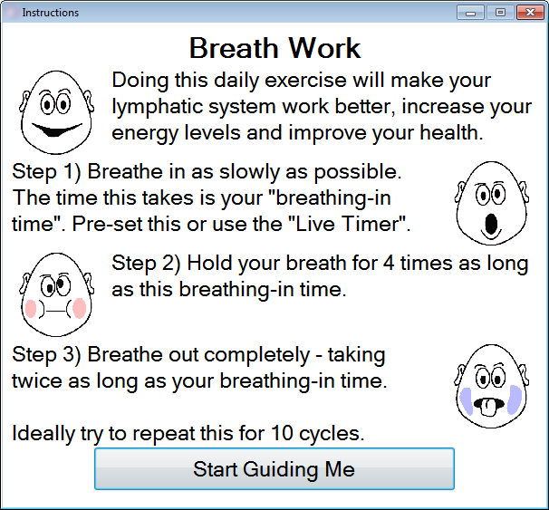
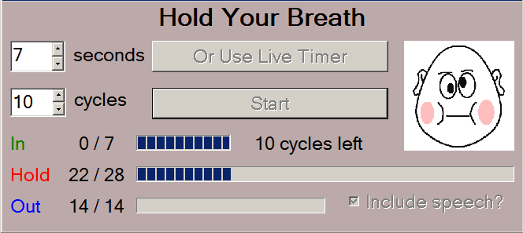

Breath for Health
Breathing well can be very calming and have an dramatic affect on your health.

The Teacher Toolkit will guide you through a daily breathing programme:

You can include the option to have instructions and count-downs read out to you. Note - this requires that you have a "Text to Speech" engine working on your computer.